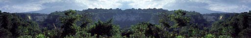
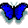

SAFARI A MISIONES - Julio 1999Ver las Fotos  Resumen Trato aquí las peripecias,
desde una óptica personal, que vivimos con mi familia cuando realizamos
un fabuloso safari, organizado por Aves Argentinas (Asociación Ornitológica
del Plata - AOP) a Moconá e Iguazú en la Provincia de Misiones.
La finalidad principal del viaje era para hacer avistaje de aves, pero sin descuidar
otros aspectos igualmente interesantes: paisajes, cataratas, selva, naturaleza
en su conjunto, con muchas caminatas y la convivencia grupal en campamento.
Y por sobre todo, para atestiguar la implacable destrucción de la selva,
y aprender de los esfuerzos que se están haciendo para salvarla.
Por Alec Earnshaw - Versión repasada y corregida Marzo 2003  Parte 1 - (Aprox. 9 Páginas) El viaje de ida. Salto Encantado. Estadía de tres días en Moconá. Algunas técnica de avistaje de aves en zonas selváticas.Parte 2 - (Aprox. 5 Páginas) El viaje a Iguazú, vía El Soberbio y San Pedro. Parque Nacional Iguazú: Las Cataratas, el Sendero Macuco y la visita a Güirá Ogá, la "Casa de las Aves". La vuelta. Corolario - (Dos Páginas) Acerca de la destrucción de las selvas de Misiones. Apéndice 1 - Lista de Aves: Las que vimos (o escuchamos), mi hijo Nicolás y yo, dentro de la provincia de Misiones. (Nota: la lista no incluye aves que tuvieron oportunidad de ver otros miembros del Safari.) Foto Satelital de la Provincia: Muestra los lugares por donde anduvimos. Ver lo verde: ¡Sólo en Misiones queda selva aún - pero ojo al piojo: ¡no todo lo que se ve verde es selva! Galería de Fotos: Testimonios y recuerdos del Safari Mi cuadro del Aguila Crestuda Negra
|